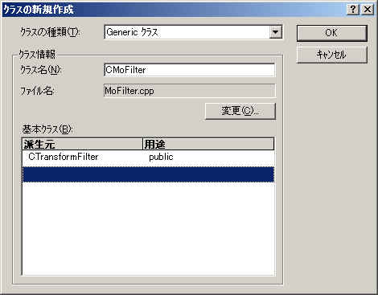
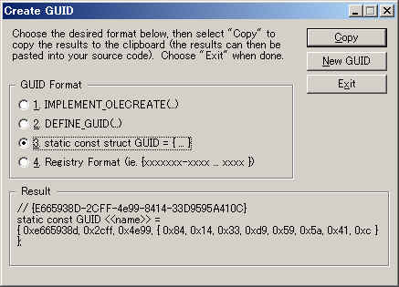

DirectShow関係
４．オリジナルフィルタの作成
オリジナルのフィルタを作成する方法を紹介します。
フィルタの作成方法は色々あるのですが、
ここで紹介するのはかなり泥臭い部類です（＾＾；
フィルタはVBでは作れないのでVC++を使用します。
C++で作成することになりますが、Cを知っていればわかる程度のものです。
なにせ私がC++をベターCとして使うぐらいの知識しかないんですから（笑
◎基底クラスの作成
まず前準備としてやらなければならないことがあります。
DirectShowのフィルタを作るにはDirectShowの基底クラスを使う必要があります。
基底クラスを使う場合はStrmbase.lib又はStrmbasd.libをリンクする必要があるのですが、
このライブラリは自前で作らないといけません。
作るといってもSDK付属のプロジェクトをビルドするだけでOKです。
(SDKインストールフォルダ)\Samples\Multimedia\DirectShow\BaseClasses
ここにあるbaseclasses.dswをVC++で開いてビルドします。
Strmbase.libはリテールライブラリでStrmbasd.libはデバッグ用です。
◎プロジェクトの新規作成
VC++を起動して新規作成のダイアログを開いたら「Win32
Dynamic-Link Library」を選択します。
フィルタは拡張子が「ax」ですが中身はDLLです。（そう思えば少し簡単に感じない？笑）
次の画面のDLLの種類は「空のDLLプロジェクト」を選択してください。
◎プロジェクトの設定
メニュー「プロジェクト」−「設定」のダイアログでビルドするための設定を行います。
デフォルト以外で変更する必要があるものは以下です。（DEBUGビルド用）
| タグ | カテゴリ | 項目 | 設定する値 |
| C/C++ | 一般 | プリプロセッサの定義 | WIN32,_DEBUG,_WINDOWS,_MBCS,_USRDLL,(フィルタ名)_EXPORTS,_X86_=1,WINVER=0x0400,DEBUG,DBG=1 (太字部分を追加。WINVERは適当に変更よろしく。) |
| コード生成 | 呼び出し規則 | __stdcall | |
| プリコンパイル済みヘッダー | プリコンパイル済みヘッダーを使用しない （この辺は好みで） |
||
| プリプロセッサ | インクルードファイルのパス | (SDKフォルダ)\include,(SDKフォルダ)\samples\Multimedia\DirectShow\BaseClasses（２箇所指定します。Streams.hをincludeフォルダにコピーしてあればincludeだけでも可） |
|
| リンク | 一般 | 出力ファイル名 | debug/フィルタ名.ax （デフォルトでは拡張子ｄｌｌなのでaxに変更する。しなくてもいいけど） |
| オブジェクト／ライブラリモジュール | kernel32.lib user32.lib gdi32.lib winspool.lib comdlg32.lib advapi32.lib shell32.lib ole32.lib oleaut32.lib uuid.lib odbc32.lib odbccp32.lib
strmbasd.lib quartz.lib msvcrt.lib winmm.lib vfw32.lib kernel32.lib advapi32.lib version.lib largeint.lib user32.lib gdi32.lib comctl32.lib ole32.lib olepro32.lib oleaut32.lib uuid.lib （太字部分を追加。本当はこんなにいっぱいいらんのだがｗ） |
||
| デフォルトライブラリをすべて無視 | チェックする | ||
| アウトプット | エントリポイントシンボル | DllEntryPoint@12 | |
| インプット | 追加ライブラリのパス | (SDKフォルダ)\lib,(SDKフォルダ)\samples\Multimedia\DirectShow\BaseClasses\debug |
◎フィルタクラスの新規作成

メニュー「挿入」−「クラスの新規作成」でプロジェクトにクラスを追加します。
このとき、基本クラスにCTransformFilterを指定します。
これは変換フィルタの基本クラスになります。
このCTransformFilterクラスを継承して変換フィルタを作ることになります。
（別のクラスもあるが、こっちの方が色々できる。、、、と思う＾＾；）
なお、クラスを作るときに「クラスの定義がみつからんよ〜。やるなら勝手にやってや〜」って感じの
警告がでるかもしれませんが、とりあえずそのまま続行してください。
この時点でプロジェクトには2つのファイルが登録され、以下のようになっていると思います。
MoFilter.h
// MoFilter.h: CMoFilter クラスのインターフェイス |
MoFilter.cpp
// MoFilter.cpp: CMoFilter クラスのインプリメンテーション |
この状態に肉付けします。
MoFilter.h
// MoFilter.h: CMoFilter クラスのインターフェイス |
MoFilter.cpp
// MoFilter.cpp: CMoFilter クラスのインプリメンテーション // ////////////////////////////////////////////////////////////////////// #include |
色付きの部分が追加した所です。（ってほとんどなんですがｗ）
それとdefファイルをプロジェクトに追加します。
MoFilter.def
; File : MoFilter.def LIBRARY MoFilter.AX DESCRIPTION 'MoFilter' EXPORTS DllGetClassObject PRIVATE DllCanUnloadNow PRIVATE DllRegisterServer PRIVATE DllUnregisterServer PRIVATE |
順に説明していきます。
◎クラスIDの定義
|
まずやることはこれから作るフィルタのクラスIDを定義することです。
MoFilter.hの青色部分がそれにあたります。
クラスIDとはクラスをレジストリに登録するときのIDのようなものです。
コードからは人間がわかりやすい名前で指定しますが、
実際にはこのIDでやり取りされている訳です。
このIDはフィルタ毎に違うものにしなければなりません。
もし同じだと登録時に上書きされてしまいます。
つまりこのIDは世界中で唯一のものにしなければならないということです。
そんなIDですから自由に決められるものではありません。
どうやって決めるかというと、
Microsoftの有料ライセンス会員になって申請し重複しないIDを交付してもらう・・・
訳ではないです（＾＾；
VisualStadioがインストールしてあれば、このIDを生成するツールが付いています。
どうやって作り出しているのかは知りませんが、
（NICのMACアドレスやマシンの構成などから作り出してるらしいですが）
実行するたびに世界中で重複しない（であろう）IDを作り出してくれます。
VisualStudioをインストールしたところのCommon\Toolsの下にあります。
デフォルトだと
C:\Program Files\Microsoft Visual Studio\Common\Tools
あたりにあります。
ツールは２つあって、GUIDGEN.EXEとUUIDGEN.EXEです。
GUIDGENはGUIツールで、UUIDGENはコンソール用です。
どっちでもいいのですが、私はGUIDGENの方ばかり使ってます。

起動するとこんな画面がでます。
GUID Formatで３番あたりを選択してCopyボタンを押すと
定義分がクロップボードに入りますのでコードに貼り付けます。
貼り付けただけだとクラスIDの名前（人間様用の名前）の部分が<<name>>などとなっているので
適当に変更します。
|
◎ファクトリテンプレートの定義
//////////////////////////////////////////////////////////////////////
// 入力ピンのメディアタイプ
const AMOVIESETUP_MEDIATYPE mPinMediaType_In=
{
&MEDIATYPE_NULL,&MEDIASUBTYPE_NULL
};
// 出力ピンのメディアタイプ
const AMOVIESETUP_MEDIATYPE mPinMediaType_Out=
{
&MEDIATYPE_NULL,&MEDIASUBTYPE_NULL
};
// ピン情報
const AMOVIESETUP_PIN mPinInfo[]=
{
{
L"Input", // ピンの名前（未使用）
FALSE, // このピンをレンダリングするか?
FALSE, // これは出力ピンか?
FALSE, // このフィルタはゼロインスタンスを生成できるか?
FALSE, // このフィルタは複数のインスタンスを生成するか?
&CLSID_NULL, // 未使用
NULL, // 未使用
1, // メディアタイプの数
&mPinMediaType_In // メディアタイプ
},
{
L"Output", // ピンの名前（未使用）
FALSE, // このピンをレンダリングするか?
TRUE, // これは出力ピンか?
FALSE, // このフィルタはゼロインスタンスを生成できるか?
FALSE, // このフィルタは複数のインスタンスを生成するか?
&CLSID_NULL, // 未使用
NULL, // 未使用
1, // メディアタイプの数
&mPinMediaType_Out // メディアタイプ
}
};
// フィルタ設定
const AMOVIESETUP_FILTER mFilterInfo=
{
&CLSID_MoFilter, // クラスID
L"MoFilter", // フィルタ名
MERIT_DO_NOT_USE, // メリット
2, // ピンの数
mPinInfo // ピン情報
};
// ファクトリテンプレートの宣言
CFactoryTemplate g_Templates[]=
{
{
L"MoFilter",
&CLSID_MoFilter,
CMoFilter::CreateInstance,
NULL,
&mFilterInfo
}
};
int g_cTemplates = sizeof(g_Templates) / sizeof(g_Templates[0]);
|
上記がファクトリテンプレートの定義になります。
フィルタの入力／出力ピンの数や種類、プロパティページに関する情報などを
ファクトリテンプレート用のパブリック変数に入れておきます。
これらを定義しておかないとコンパイルエラーになります。
最終的に必要になるのはg_Templatesとg_cTemplatesです。
その中で指定する情報を上で定義しています。（上で説明したクラスIDも指定します）
今回作成するフィルタは、入力１、出力１のフィルタで名前は「MoFilter」になってます。
g_Templatesの要素が１つですが、プロパティページなどがある場合はここにその内容を記述します。
構造体の各メンバの意味については、コード中のコメントとDirectXSDKのヘルプを参照してください。
◎レジストリへの登録／解除
フィルタはレジストリに登録しなければなりません。
下記がその部分になります。
//////////////////////////////////////////////////////////////////////
// レジストリへの登録
STDAPI DllRegisterServer()
{
return AMovieDllRegisterServer2( TRUE );
}
// レジストリからの解除
STDAPI DllUnregisterServer()
{
return AMovieDllRegisterServer2( FALSE );
}
|
; File : MoFilter.def LIBRARY MoFilter.AX DESCRIPTION 'MoFilter' EXPORTS DllGetClassObject PRIVATE DllCanUnloadNow PRIVATE DllRegisterServer PRIVATE DllUnregisterServer PRIVATE |
レジストリに登録するにはDllRegisterServerとDllUnregisterServerという関数をエクスポートします。
この辺はDLLを作るときの決まりみたいなもんです。
コピペしちゃってください。
エクスポートする関数はこの２つのほかにDllGetClassObjectとDllCanUnloadNowもありますが、
これは基底クラスを定義したライブラリStrmbase.lib又はStrmbasd.libにありますので
名前だけdefファイルで挙げておけばOKです。
◎インスタンス化の処理
//////////////////////////////////////////////////////////////////////
// コンストラクタ
CMoFilter::CMoFilter(TCHAR *tszName, LPUNKNOWN pUnk, HRESULT *phr) :
CTransformFilter(tszName, pUnk, CLSID_MoFilter)
{
}
// デストラクタ
CMoFilter::~CMoFilter()
{
}
//////////////////////////////////////////////////////////////////////
// インスタンス作成
CUnknown *CMoFilter::CreateInstance(LPUNKNOWN punk, HRESULT *phr)
{
CMoFilter *pNewObject=new CMoFilter( NAME("MoFilter"),punk,phr );
if( pNewObject==NULL )
{
*phr=E_OUTOFMEMORY;
}
return pNewObject;
}
|
デフォルトのコンストラクタCMoFilter::CMoFilterは削除して、上のコードに変えています。
親クラスの初期化を加えているだけですが。
CMoFilter::CreateInstanceは実際にフィルタが作成されたときにＤｉｒｅｃｔＳｈｏｗ側から呼び出されます。
ここは「決まり」です（＾＾；こういう風に書きましょう。
NAME()マクロで指定している部分NAME("MoFilter")はフィルタの名前になります。
◎メソッドの実装
作成するフィルタクラスCMoFilterの親クラスCTransformFilterの仮想関数を実装します。
|
上の青色部分の関数を定義する必要があります。
CompleteConnectとTransformは純粋仮想関数ではないので定義する必要はないのですが、
説明のために挙げてあります。
//////////////////////////////////////////////////////////////////////
// 入力ピンの接続チェック
HRESULT CMoFilter::CheckInputType(const CMediaType *mtIn)
{
return E_FAIL;
}
// 出力ピンの接続チェック
HRESULT CMoFilter::CheckTransform(const CMediaType *mtIn, const CMediaType *mtOut)
{
return E_FAIL;
}
//////////////////////////////////////////////////////////////////////
// バッファの準備
HRESULT CMoFilter::DecideBufferSize(IMemAllocator *pAlloc, ALLOCATOR_PROPERTIES *pProperties)
{
return E_FAIL;
}
// 出力ピンが接続できるメディアタイプを返す
HRESULT CMoFilter::GetMediaType(int iPosition, CMediaType *pMediaType)
{
return E_FAIL;
}
//////////////////////////////////////////////////////////////////////
// 接続完了
HRESULT CMoFilter::CompleteConnect( PIN_DIRECTION direction,IPin *pReceivePin )
{
return E_FAIL;
}
//////////////////////////////////////////////////////////////////////
// 転送
HRESULT CMoFilter::Transform(IMediaSample *pIn, IMediaSample *pOut)
{
return E_FAIL;
}
|
これらは状況によってDirectShow側から呼び出されます。
現在はいずれのメソッドも何もしないでエラーを返しています。
実際にはこれらのメソッド内で色々します。
CheckInputType
CheckTransform
アプリケーションがフィルタをグラフに接続しようとしたときなど、
接続ができるかどうかを問い合わせるときに呼び出される関数です。
接続先のピンの属性を調べて接続を許可するならS_OKを返すようにします。
DecideBufferSize
下流のフィルタからの要求を満たすためにバッファのサイズを返します。
DecideAllocatorメソッドから呼び出されます。
GetMediaType
アプリケーションがピンの属性を要求したときに有効なタイプを答えます。
CompleteConnect
フィルタが接続されたときに呼び出されます。
Transform
上流から渡されたストリームデータ（pIn)を加工して
下流へ渡すバッファ(pOut)にセットします。
メインというか一番大事なところかもしれません。
以上で骨組みだけのフィルタができます。
コンパイルすればMoFilter.axができると思います。
あとはこれをレジストリに登録すればDirectShowから使えるようになります。
（実際にはなにをやってもエラーになるんで使えないけどｗ）
レジストリに登録するにはregsvr32.exeを使いましょう。
regsvr32 MoFilter.ax
これでGraphEditなどで一覧に現れるようになります。
グラフに登録することまでできると思いますが、どんなフィルタもつながりません（＾＾；
具体的な実装は長くなったのでその２で紹介します。